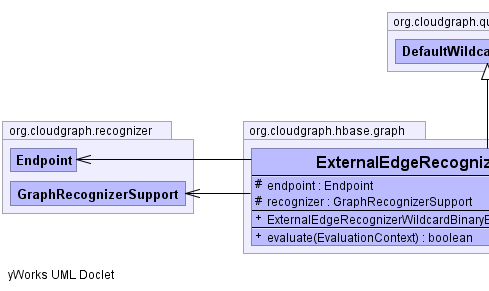
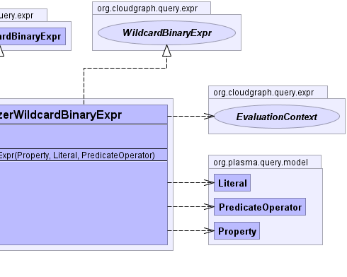

public class ExternalEdgeRecognizerWildcardBinaryExpr extends DefaultWildcardBinaryExpr implements WildcardBinaryExpr
WildcardBinaryExpr implementation which uses a specific evaluation
context to locate or recognize a given
row key field within the context of the expression.
For external edges, we have only the row key fields to evaluate and the predicate tree may contain predicates with properties which target fields anywhere in the target graph including properties outside the row key. So for external edge evaluators always return true when a value is not found.
ExternalEdgeRecognizerContext|  |  |
| Modifier and Type | Field and Description |
|---|---|
protected Endpoint |
endpoint |
protected GraphRecognizerSupport |
recognizer |
literal, operator, property, propertyPath| Constructor and Description |
|---|
ExternalEdgeRecognizerWildcardBinaryExpr(org.plasma.query.model.Property property,
org.plasma.query.model.Literal literal,
org.plasma.query.model.PredicateOperator operator)
Constructs an expression based on the given terms and column qualifier
prefix.
|
| Modifier and Type | Method and Description |
|---|---|
boolean |
evaluate(EvaluationContext context)
Returns a "truth" value for the expression using a specific evaluation
context to locate or recognize a
given row key field within the context of the expression. |
getLiteral, getOperator, getProperty, getPropertyPath, toStringaccept, createPropertyPath, getLeft, getRight, setLeft, setRightclone, equals, finalize, getClass, hashCode, notify, notifyAll, wait, wait, waitgetLiteral, getOperator, getProperty, getPropertyPathaccept, getLeft, getRightprotected Endpoint endpoint
protected GraphRecognizerSupport recognizer
public ExternalEdgeRecognizerWildcardBinaryExpr(org.plasma.query.model.Property property,
org.plasma.query.model.Literal literal,
org.plasma.query.model.PredicateOperator operator)
property - the "left" property termliteral - the "right" literal termoperator - the wildcard operatorLocalEdgeRecognizerContextpublic boolean evaluate(EvaluationContext context)
context to locate or recognize a
given row key field within the context of the expression.
For external edges, we have only the row key fields to evaluate and the predicate tree may contain predicates with properties which target fields anywhere in the target graph including properties outside the row key. So for external edge evaluators always return true when a value is not found, but indicate the row evaluation was not complete so downstream actions can be taken.
evaluate in interface Exprevaluate in class DefaultWildcardBinaryExprcontext - context to locate or
recognize a given row key field within the context of the
expression.LocalEdgeRecognizerContextCloudGraph® is a registered trademark of TerraMeta Software, Inc. Copyright © 2014 - All Rights Reserved.